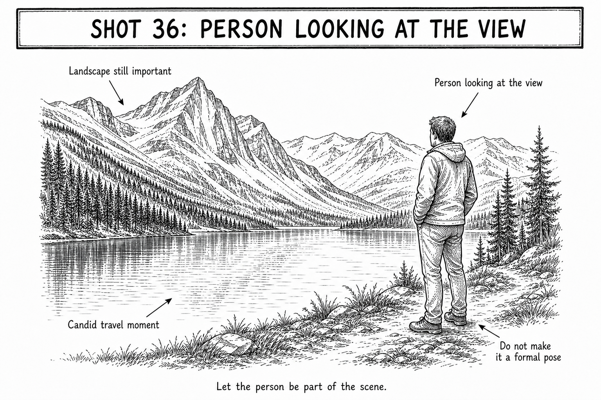

Start here
Av | Aperture f/5.6 | ISO Auto
How to take it
- Place the person near one side, looking into the scenery.
- Leave more room in front of their gaze than behind them.
- Put the AF point on the person's head or shoulder edge.
- Half-press and confirm the person is sharp.
- Take one wide frame and one slightly tighter version.
Focus this shot
Place it: Put the AF point on the person's head or shoulder edge.
Look for: The head or shoulder should look crisp when focus confirms.
If this happens
| Person is too small | Walk closer before zooming so they remain a clear anchor. |
|---|---|
| View is blocked | Move the person to one side and open up the scenery. |
| Person is soft | Refocus on the head or shoulder edge. |
| Frame feels posed | Ask them to keep looking at the view rather than the camera. |
Tips
- A person facing away can make a view feel more personal, not less.
- Leave room in front of their gaze so the picture can breathe.